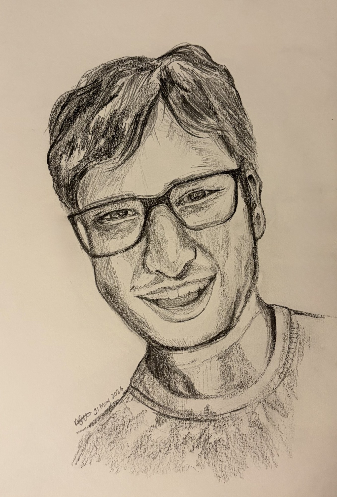

Personal essays, paired sometimes with a portrait drawn for the same subject.

Little brothers are minions, devious scamps, and, every so often, kind-hearted angels.
What's it like living, surviving, and — with some luck — thriving in a foreign country, 11,735 kilometers from the warmth of home and the comfort of family?
The wondrous impact of the film scores of Hans Zimmer — an appreciation, through the eyes of a devoted fan.
A collection of campus vignettes, published in the UBC Alumni Magazine.